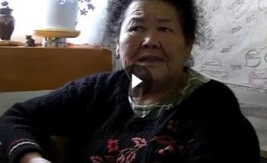

<citation_form_text>
<lexical-unit_form_text>
<Morph-type> <Dialect> <VK107,V-CH'057>

rus
входить (внутрь), вмещаться, влезать;
Непереходный глагол
example
- кэстанкэ тчʼэкичэн — пример на русском
- полоканкэ ӄчʼэхч — пример на русском
- тʼсалай асэранкэ кчʼэкнэн — пример на русском
- фсэ кчʼэкнэн [xʷse kčʼeknen] — пример на русском
eng
go in;
Intransitive verb
example
- кэстанкэ тчʼэкичэн [kestanke tčʼekičen] — I came into the house
- полоканкэ ӄчʼэхч [polokanke qčʼexč] — crawl into the tent
- тʼсалай асэранкэ кчʼэкнэн [tʼsalaj aseranke kčʼeknen] — fox went into the hole
- фсэ кчʼэкнэн [xʷse kčʼeknen] — all entered
Tag 1
Date
Author
Place
Keywords
Исторические данные
<SOURCE>
Nulla Lorem mollit cupidatat irure. Laborum magna nulla duis ullamco cillum dolor. Voluptate exercitation incididunt aliquip deserunt reprehenderit elit laborum.
Aliqua id fugiat nostrud irure ex duis ea quis id quis ad et. Sunt qui esse pariatur duis deserunt mollit dolore cillum minim tempor enim. Elit aute irure tempor cupidatat incididunt sint deserunt ut voluptate aute id deserunt nisi.
Aliqua id fugiat nostrud irure ex duis ea quis id quis ad et. Sunt qui esse pariatur duis deserunt mollit dolore cillum minim tempor enim. Elit aute irure tempor cupidatat incididunt sint deserunt ut voluptate aute id deserunt nisi.
Связанные файлы
Тексты
Носитель языка, место записи, дата.
Автобиографические ВоспоминанияИ звонит Кеша Яганов, мой двоюродный брат. И спрашивает по-своему, я ему по-своему отвечаю по телефону. Джонатан [Бобальик] говорит ...
Носитель языка, место записи, дата.
Автобиографические ВоспоминанияИ звонит Кеша Яганов, мой двоюродный брат. И спрашивает по-своему, я ему по-своему отвечаю по телефону. Джонатан [Бобальик] говорит ...
Аудио
Файлы

Связанные Видео

01 jun 2020
запороцкий георгий, П-Камчатский
Greyhound divisively hello coldly wonderfully
01 jun 2020
запороцкий георгий, П-Камчатский
Greyhound divisively hello coldly wonderfully